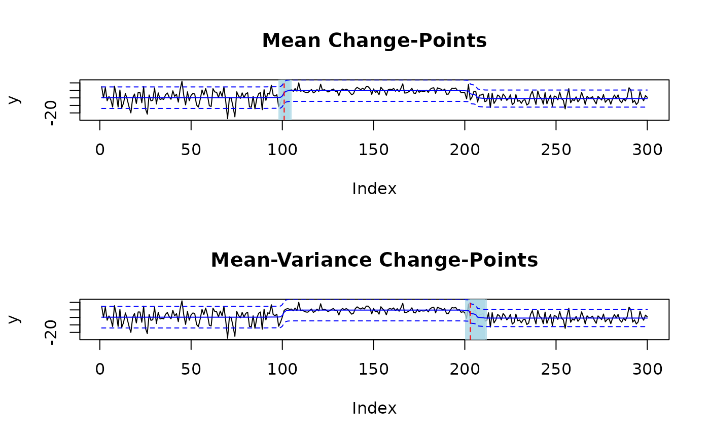
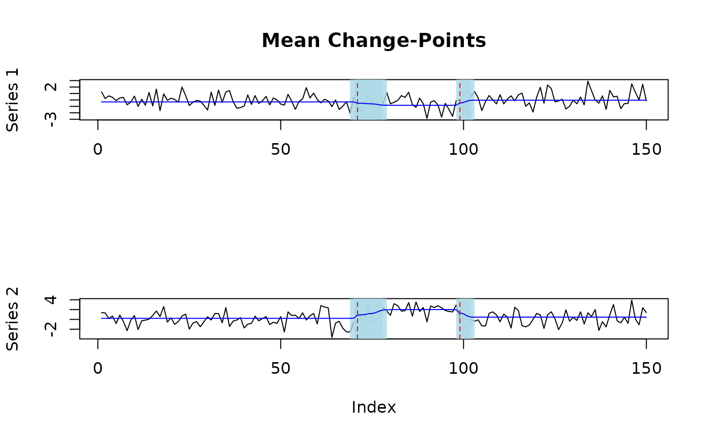
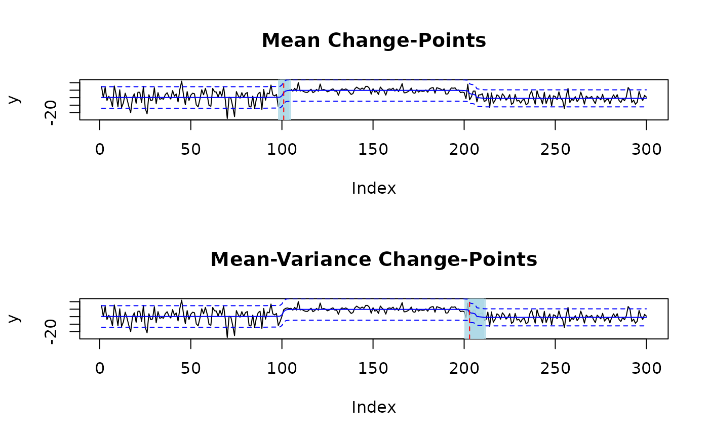
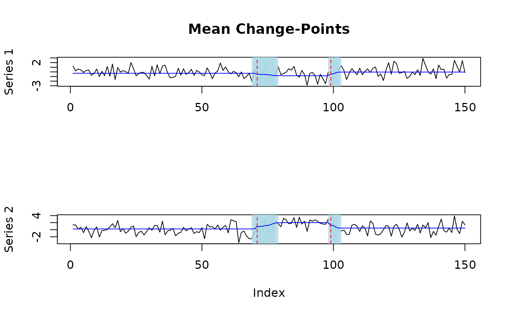

Implementation of the MICH model as described in Berlind, Cappello, and Madrid Padilla. MICH is a Bayesian change-point detection method that can quantify uncertainty around estimated change-points in the form of credible sets.
Usage
mich(
y,
fit_intercept = TRUE,
fit_scale = TRUE,
standardize = TRUE,
J = 0,
L = 0,
K = 0,
J_auto = FALSE,
L_auto = FALSE,
K_auto = FALSE,
J_max = Inf,
L_max = Inf,
K_max = Inf,
tol = 1e-05,
merge_prob = NULL,
merge_level = 0.95,
max_iter = 10000,
verbose = FALSE,
reverse = FALSE,
restart = TRUE,
increment = 1,
omega_j = 0.001,
u_j = 0.001,
v_j = 0.001,
pi_j = "weighted",
omega_l = 0.001,
pi_l = "weighted",
u_k = 0.001,
v_k = 0.001,
pi_k = "weighted"
)Arguments
- y
A numeric vector or matrix. A length \(T\) vector of observations exhibiting change-points in the mean and/or variance of the series, or a \(T \times d\) matrix of observations exhibiting just mean changes.
- fit_intercept
A logical. If
fit_intercept == TRUE, then an intercept is estimated, otherwise it is assumed that \(\mu_0 = 0\).- fit_scale
A logical. If
fit_scale == TRUE, then the initial precision is estimated, otherwise it is assumed that \(\lambda_0 = 1\) (or \(\Lambda_0 = \mathbf{I}_d\) ifyis a matrix).- standardize
A logical. If
standardize == TRUE, thenyis centered and rescaled before fitting.- L, J, K
Integers. Respective number of mean-scp, var-scp, and meanvar-scp components included in the model. If
L_auto == TRUE,K_auto == TRUE, orJ_auto == TRUEthenL,K, andJlower bound the number of each kind of change-point in the model.- L_auto, K_auto, J_auto
Logicals. If
L_auto == TRUE,K_auto == TRUE, and/orJ_auto == TRUE, thenmich_vector()searches forr and returns the \(L\) betweenLandL_max, the \(K\) betweenKandK_max, and/or the \(J\) betweenJandJ_maxthat maximize the ELBO (see Appendix C.4 of Berlind, Cappello, Madrid Padilla (2025)).- L_max, K_max, J_max
Integers. If
L_auto == TRUE,K_auto == TRUE, orJ_auto == TRUEthenL_max,K_max, andJ_maxupper bound the number of each kind of change-point in the model.- tol
A scalar. Convergence tolerance for relative increase in ELBO. Once \((\text{ELBO}_{t+1}-\text{ELBO}_t)/ \text{ELBO}_t\) falls below
tolthe variational algorithm terminates.- merge_prob
A scalar. A value between (0,1) indicating the merge criterion. If the posterior probability that two components identify the same change is greater than
merge_level, then those components are merged (see Appendix C.3 of Berlind, Cappello, Madrid Padilla (2025)).- merge_level
A scalar. A value between (0,1) for the significance level to construct credible sets at when merging. A model component is only considered to be a candidate for merging if its
merge_level-level credible set contains fewer thandetectindices.- max_iter
An integer. Maximum number of variational iterations. If ELBO does not converge before
max_iteris reached, thenconverged == FALSEin the returned fit object.- verbose
A logical. If
verbose == TRUEandL_auto == FALSE,K_auto == FALSE, andJ_auto == FALSEthen the value of the ELBO is printed every 5000th iteration. Ifverbose == TRUEand any ofL_auto,K_auto, orJ_autoareTRUE, then the value of the ELBO is printed for each combinatin of \((L,K,J)\) asmich_vector()searches for the parameterization that maximized the EBLO.- reverse
A logical. If
reverse == TRUEthen MICH is fit to \(\mathbf{y}_{T:1}\) and the model parameters are reversed in post-processing.- restart
logical. If
restart == TRUEandL_auto,K_auto, orJ_autoareTRUE, then aftern_searchincrements ofL,K, and/orJ, if the ELBO has not increased,mich_vector()will restart by setting theL,K, andJcomponents to the null model initialization (except for the components with maximum posterior probabilities > 0.9) then refit and begin the search again.- increment
An integer. Number of components to increment
L,KandJby whenL_auto,K_auto, orJ_autoareTRUE.- omega_j, u_j, v_j
Scalars. Prior precision, shape, and rate parameters for meanvar-scp components of the model.
- pi_j
A character or numeric vector or matrix. Prior for the meanvar-scp model components. Must either be a length \(T\) vector with entries that sum to one, a \(T \times J\) matrix with columns that sum to one, or a character equal to
"weighted"or"uniform". Ifpi_jis a vector andJ > 1, thenpi_jis used as the prior for allJmeanvar-scp components in the model. Ifpi_j == "uniform"then the uniform prior \(\pi_{jt} = 1/T\) is used for all components. Ifpi_j == "weighted"thenlog_meanvar_prior()is used to calculate the weighted prior as described in Appendix C.2 of Berlind, Cappello, Madrid Padilla (2025). IfJ_auto == TRUEthen it must be the case thatpi_j %in% c("uniform", "weighted").- omega_l
A scalar. Prior precision parameter for mean-scp components of the model. If
yis a matrix then the prior precision is \(\omega_\ell\mathbf{I}_d\).- pi_l
A character or numeric vector or matrix. Prior for the mean-scp model components. Must either be a length \(T\) vector with entries that sum to one, a \(T \times L\) matrix with columns that sum to one, or a character equal to
"weighted"or"uniform". Ifpi_lis a vector andL > 1, thenpi_lis used as the prior for allLmean-scp components. Ifpi_l == "uniform"then the uniform prior \(\pi_{\ell t} = 1/T\) is used for all components. Ifpi_l == "weighted"thenlog_mean_prior()is used to calculate the weighted prior as described in Appendix C.2 of Berlind, Cappello, Madrid Padilla (2025). IfL_auto == TRUEthen it must be the case thatpi_l %in% c("uniform", "weighted").- u_k, v_k
Scalar. Prior shape and rate parameters for var-scp components of the model.
- pi_k
A character or numeric vector or matrix. Prior for the var-scp model components. Must either be a length \(T\) vector with entries that sum to one, a \(T \times K\) matrix with columns that sum to one, or a character equal to
"weighted"or"uniform". Ifpi_kis a vector andK > 1, thenpi_kis used as the prior for allKvar-scp components. Ifpi_k == "uniform"then the uniform prior \(\pi_{k t} = 1/T\) is used for all components. Ifpi_k == "weighted"thenlog_var_prior()is used to calculate the weighted prior as described in Appendix C.2 of Berlind, Cappello, Madrid Padilla (2025). IfK_auto == TRUEthen it must be the case thatpi_k %in% c("uniform", "weighted").
Value
A list. Parameters of the variational approximation the MICH
posterior distribution. If y is a vector, this list includes:
y: A numeric vector. Original data.L,K,J: Integers. Number of mean-scp, var-scp, and meanvar-scp components included in the model.residual: A numeric vector. Residual \(\tilde{\mathbf{r}}_{1:T}\) (see (B.4) of Berlind, Cappello, Madrid Padilla (2025)).mu: A numeric vector. Posterior estimate of \(\Sigma_{\ell=1}^L E[\boldsymbol{\mu}_{\ell,1:T}|\mathbf{y}_{1:T}] + \Sigma_{j=1}^J E[\boldsymbol{\mu}_{j,1:T}|\mathbf{y}_{1:T}]\).lambda: A numeric vector. Posterior estimate of \(\Pi_{k=1}^K E[\boldsymbol{\lambda}_{k,1:T}|\mathbf{y}_{1:T}] \times \Pi_{j=1}^J E[\boldsymbol{\lambda}_{j,1:T}|\mathbf{y}_{1:T}]\).delta: A numeric vector. Posterior estimate of equation (B.4) of Berlind, Cappello, Madrid Padilla (2025).mu_0: A scalar. Estimate of the intercept.lambda_0: A scalar. Estimate of the initial precision.elbo: A numeric vector. Value of the ELBO after each iteration.converged: A logical. Indicates whether relative increase in the ELBO is less thantol.meanvar_model: A list. List of meanvar-scp posterior parameters:pi_bar: A numeric matrix. A \(T \times J\) matrix of posterior change-point location probabilities.b_bar: A numeric matrix. A \(T \times J\) matrix of posterior mean parameters.omega_bar: A numeric matrix. A \(T \times J\) matrix of posterior precision parameters.v_bar: A numeric matrix. A \(T \times J\) matrix of posterior rate parameters.u_bar: A numeric vector. A length \(T\) vector of posterior shape parameters.mu_lambda_bar: A numeric matrix. A \(T \times J\) matrix of scaled posterior mean signals \(E[\lambda_{jt}\mu_{jt}|\mathbf{y}_{1:T}]\).mu2_lambda_bar: A numeric matrix. A \(T \times J\) matrix of scaled posterior squared mean signals \(E[\lambda_{jt}\mu^2_{jt}|\mathbf{y}_{1:T}]\).lambda_bar: A numeric matrix. A \(T \times J\) matrix of posterior precision signals \(E[\lambda_{jt}|\mathbf{y}_{1:T}]\).
mean_model: A list. List of mean-scp posterior parameters:pi_bar: A numeric matrix. A \(T \times L\) matrix of posterior change-point location probabilities.b_bar: A numeric matrix. A \(T \times L\) matrix of posterior mean parameters.omega_bar: A numeric matrix. A \(T \times L\) matrix of posterior precision parameters.mu_bar: A numeric matrix. A \(T \times L\) matrix of posterior mean signals \(E[\mu_{\ell t}|\mathbf{y}_{1:T}]\).mu2_bar: A numeric matrix. A \(T \times L\) matrix of posterior squared mean signals \(E[\mu_{\ell t}^2|\mathbf{y}_{1:T}]\).
var_model: A list. List of var-scp posterior parameters:pi_bar: A numeric matrix. A \(T \times K\) matrix of posterior change-point location probabilities.v_bar: A numeric matrix. A \(T \times K\) matrix of posterior rate parameters.u_bar: A numeric vector. A length \(T\) vector of posterior shape parameters.lambda_bar: A numeric matrix. A \(T \times K\) matrix of posterior precision signals \(E[\lambda_{kt}|\mathbf{y}_{1:T}]\).
If y is a vector, this list includes:
y: A numeric matrix. Original data.Sigma: A numeric matrix. Estimate of \(\Lambda^{-1}\) iffit_scale == TRUE.L: An integer. Number of components included in model.pi_bar: A numeric matrix. A \(T \times L\) matrix of posterior change-point location probabilites.residual: A numeric matrix. Residual \(\mathbf{r}_{1:T}\) after subtracting out each \(E[\boldsymbol{\mu}_{\ell t}]\) from \(\mathbf{y}_{1:T}\).mu: A numeric matrix. Posterior estimate of \(\Sigma_{\ell=1}^L E[\boldsymbol{\mu}_{\ell,1:T}|\mathbf{y}_{1:T}]\).mu_0: A numeric vector. Estimate of the intercept.post_params: A list. List of posterior parameters for each mean-scp component.elbo: A numeric vector. Value of the ELBO after each iteration.converged: A logical. Indicates whether relative increase in the ELBO is less thantol.
Examples
set.seed(222)
# generate univariate data with two mean-variance change-points
y = c(rnorm(100,0,10), rnorm(100,10,3), rnorm(100,0,6))
fit = mich(y, J = 2) # fit two mean-variance change-points
# plot change-points with 95% credible sets
plot(fit, level = 0.95, cs = TRUE)
 # fit one mean and one mean-variance change-point
fit = mich(y, J = 1, L = 1)
# plot change-points with 95% credible sets and signal
plot(fit, level = 0.95, cs = TRUE, signal = TRUE)

# generate correlated mulitvariate data with two mean-variance change-points
T <- 150
Sigma <- rbind(c(1, 0.7), c(0.7, 2))
d <- ncol(Sigma)
Sigma_eigen <- eigen(Sigma)
e_vectors <- Sigma_eigen$vectors
e_values <- Sigma_eigen$values
Sigma_sd <- e_vectors %*% diag(sqrt(e_values)) %*% t(e_vectors)
Z <- sapply(1:d, function(i) rnorm(T))
mu <- c(-1, 2)
mu_t <- matrix(0, nrow = 70, ncol=d)
mu_t <- rbind(mu_t, t(sapply(1:30, function(i) mu)))
mu_t <- rbind(mu_t, matrix(0, nrow = 50, ncol = d))
Y <- mu_t + Z %*% Sigma_sd
# fit MICH and pick L automatically using ELBO
fit = mich(Y, L_auto = TRUE)
plot(fit, level = 0.95, cs = TRUE, signal = TRUE)

# fit one mean and one mean-variance change-point
fit = mich(y, J = 1, L = 1)
# plot change-points with 95% credible sets and signal
plot(fit, level = 0.95, cs = TRUE, signal = TRUE)

# generate correlated mulitvariate data with two mean-variance change-points
T <- 150
Sigma <- rbind(c(1, 0.7), c(0.7, 2))
d <- ncol(Sigma)
Sigma_eigen <- eigen(Sigma)
e_vectors <- Sigma_eigen$vectors
e_values <- Sigma_eigen$values
Sigma_sd <- e_vectors %*% diag(sqrt(e_values)) %*% t(e_vectors)
Z <- sapply(1:d, function(i) rnorm(T))
mu <- c(-1, 2)
mu_t <- matrix(0, nrow = 70, ncol=d)
mu_t <- rbind(mu_t, t(sapply(1:30, function(i) mu)))
mu_t <- rbind(mu_t, matrix(0, nrow = 50, ncol = d))
Y <- mu_t + Z %*% Sigma_sd
# fit MICH and pick L automatically using ELBO
fit = mich(Y, L_auto = TRUE)
plot(fit, level = 0.95, cs = TRUE, signal = TRUE)
